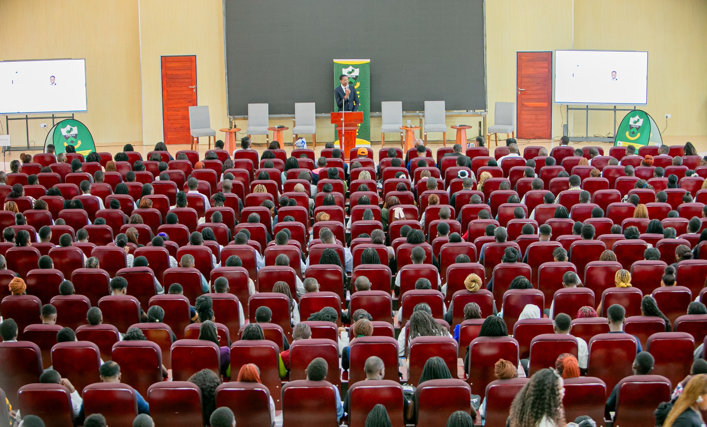
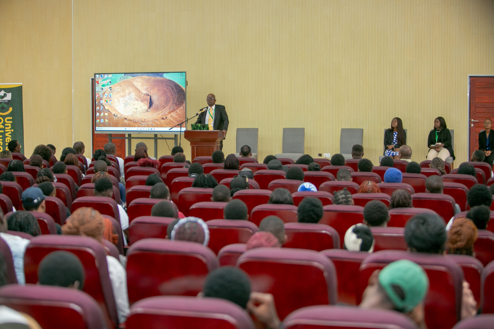
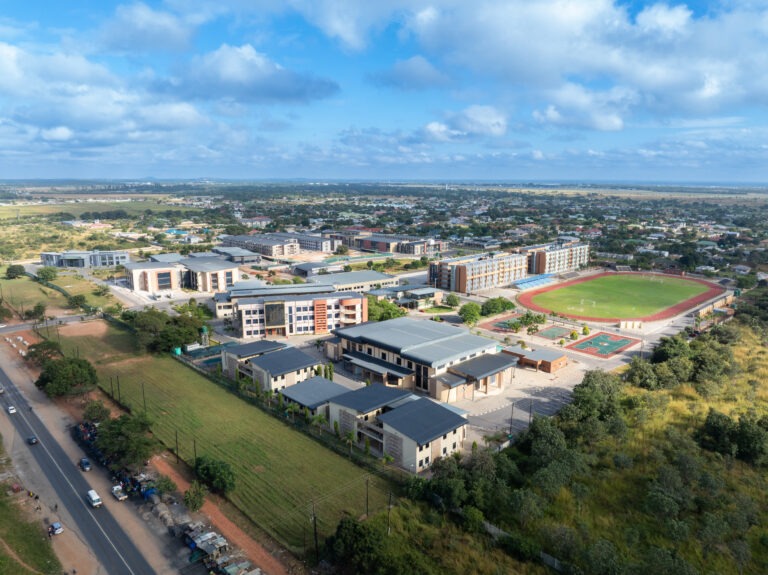
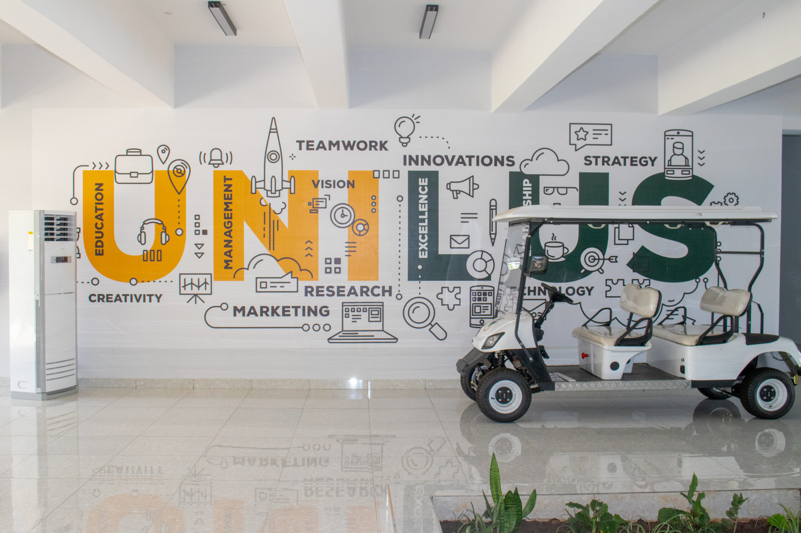
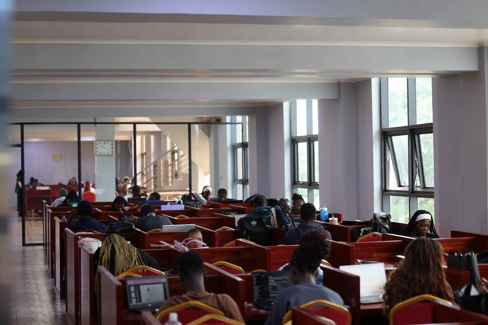
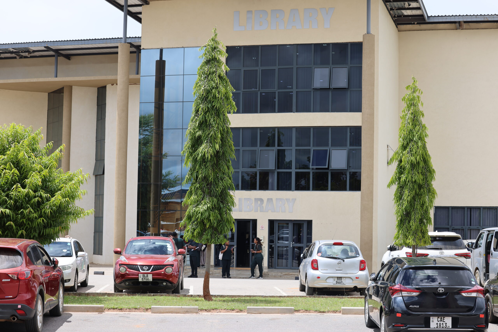
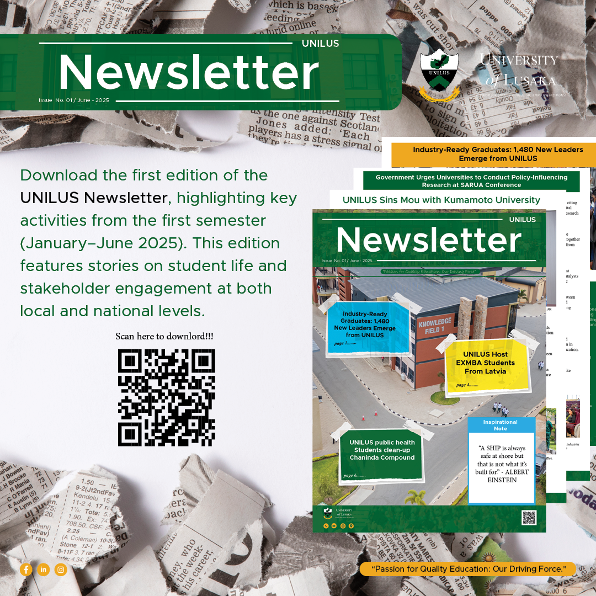

Prospective Students
Discover admission requirements, application processes, and financial aid opportunities.
Empowering minds, shaping futures and advancing knowledge for a
better
tomorrow through excellence in education and research
Discover admission requirements, application processes, and financial aid opportunities.
Access your student portal, academic calendar, and campus resources.
Find resources, tools, and information for university faculty and staff members.
Stay connected with your alma mater and join our global alumni network.
Celebrating academic excellence and student achievement.

The Bachelor of Laws (LLB) degree offers courses that go beyond the requirements of the conventional law degree.
Read More →
The Bachelor of Science in Computer Science is a four-year programme that provides a solid grounding in computing concepts and emerging technologies.
Read More →
The MBA at the University of Lusaka is designed with you in mind. Creating versatile and confident leaders who can make strategic decisions.
Read More →Our commitment to academic excellence is reflected in these key achievements and milestones.
Attend lectures and academic activities on campus with full access to university facilities, libraries, and student support services.
Study remotely through online platforms and guided self-study, ideal for learners who cannot attend campus regularly.
A flexible option combining online learning with limited on-campus sessions, tailored for working professionals.
Experience a vibrant campus community with diverse opportunities for
personal
growth, leadership, and lifelong friendships.

From student organizations and intramural sports to cultural events and volunteer opportunities, our campus offers endless ways to connect, grow, and make lasting memories.
Our degree programmes are internationally recognised and designed to prepare graduates for global careers.
Learn More

See our most popular questions.
Learn MoreThe session will explore the role of digital technologies, including AI, in strengthening research ethics review during public health emergencies...
Read More● UNILUS – ◷ April 7, 2026
● UNILUS – ◷ March 10, 2026

● UNILUS – ◷ October 7, 2025